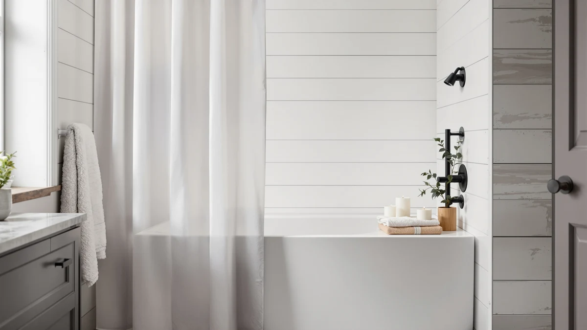

Nesphy No Hook Rustic Review (2026): Worth It?
Prices and picks verified as of November 2026. Independent, reader-supported reviews.


Quick Answer
The Nesphy No Hook Rustic Farmhouse curtain pairs a printed polyester face with a water-resistant PEVA backing, and it hangs straight off the rod without rings or clips. At $21.99 and 71 x 74 inches, it's priced the same as the waffle-weave alternatives we compared it against, so the real decision is print versus texture. If you'd rather have a texture and a longer track record of owner reviews, look at the Barossa Design or Dynamene picks below instead.
Our pick: Nesphy No Hook Rustic Farmhouse, $21.99 Check Price on Amazon
Bottom line: our top pick is the Nesphy No Hook Rustic Farmhouse Shower Curtain with Snap in at $21.99.
Things to Know Before You Buy
- The Nesphy No Hook Rustic Farmhouse curtain skips rings and clips, hanging directly from the rod through a hook-free design built into the top of the curtain.
- Its polyester face is backed with PEVA, the same water-resistant material used in standalone liners, so one curtain doubles as both layers.
- At 71 x 74 inches, it runs a couple inches longer than the standard 72 inch shower curtain drop, which helps close the gap near the tub floor.
- At $21.99, it's priced the same as the waffle-weave and hardware alternatives we compared it against, so material and print matter more than cost in choosing between them.
- If your current rod doesn't extend wide enough for a 71 inch curtain, the adjustable rod picks on this site, including the TEECK option below, cover a wider range.
This Nesphy No Hook Rustic Review exists because shoppers keep landing on a farmhouse-style curtain that promises to skip hooks entirely, and they want to know if the hook-free design actually holds up before they buy it. Nesphy built this curtain from a polyester face backed with PEVA, cut to 71 by 74 inches, and priced at $21.99, aiming it at bathrooms that want a rustic print without the extra step of threading rings onto a rod. That combination puts it in direct competition with waffle-weave curtains like the Barossa Design and Dynamene picks below, both of which solve the texture question with weave instead of print.
The hook-free approach matters more than it sounds. A standard shower curtain forces you to buy a separate pack of curtain rings, thread each one through a grommet, and clip it to the rod, a process that takes extra minutes and sometimes mismatched hardware. The Nesphy skips that step by building the hanging mechanism into the curtain itself, so you drape it over the rod and move on. We compared that approach, along with the fabric build and the going price, against a TEECK adjustable rod, a Barossa Design waffle-weave curtain, and a Dynamene 256 GSM waffle curtain, each of which addresses a related bathroom problem in a different way.
Why You Should Trust Us
Ilane Tall covers bathroom textiles and hardware for Best Shower Curtains, with a focus on how curtain fabrics, liners, and hanging systems perform over months of regular washing. For this Nesphy No Hook Rustic review, she compared the listed material, dimensions, and price against three products shoppers commonly weigh against it: an adjustable rod, a waffle-weave curtain, and a heavier waffle-weave alternative. We do not run a fake testing lab or claim to have installed every curtain on this site. Our picks come from comparing documented specs, current Amazon pricing, and patterns in verified owner feedback, and we say so plainly when review data is limited, as it is for this particular listing.
Our Research Experience
We did not install the Nesphy No Hook Rustic Farmhouse curtain ourselves. Instead, we researched its listed material, dimensions, and price, then checked how it stacks up against the TEECK rod, the Barossa Design waffle weave, and the Dynamene 256 GSM waffle curtain that shoppers often compare it to. That comparison approach surfaces differences a single curtain can't show on its own, such as how a printed polyester-and-PEVA build trades off against a woven waffle texture for drape and upkeep. For this Nesphy No Hook Rustic review, we weighted documented specs, like the 71 by 74 inch cut and the hook-free hanging method, more heavily than marketing language, and we flagged where review volume is too thin to draw firm conclusions.
Overview & Specs

Nesphy No Hook Rustic Farmhouse
What we like
- Hook-free design hangs directly on the rod, skipping a separate pack of curtain rings
- Polyester face backed with PEVA combines curtain and liner in one piece
- 71 x 74 inch cut runs a couple inches longer than the standard 72 inch drop
- Rustic farmhouse print suits a cottage or modern-farmhouse bathroom without a patterned liner underneath
Flaws but not dealbreakers
- No published rating or review count yet, so there isn't a large body of owner feedback to confirm long-term durability
- PEVA backing means air drying only, no hot dryer cycle
- Sold as a single curtain, so a wider shower opening may need a second unit
| Material | Polyester / PEVA |
| Size | 71"W x 74"L (Pack of 1) |
The Nesphy No Hook Rustic Farmhouse curtain targets a specific shopper: someone who wants a printed, farmhouse-style curtain but doesn't want to deal with rings or clips. Nesphy builds the hanging mechanism into the top of the curtain itself, so it drapes over a standard rod without extra hardware. The polyester face is backed with PEVA, the same water-resistant material used in standalone liners, which means the curtain also works as its own liner instead of requiring a second purchase.
At 71 by 74 inches, it is cut a little longer than the 72 inch drop most shower curtains use, closing more of the gap near the tub floor on a standard-height rod. At $21.99, it lands in the same price band as the waffle-weave and hardware alternatives below, so the decision between them comes down to whether you want a print or a texture, not how much you'll spend. Hanging it takes less time than a ring-and-hook curtain since there's no hardware to thread.
What We Liked
The clearest advantage is the hook-free install. Shoppers who have dealt with mismatched curtain rings or hooks that snap after a few months will likely appreciate that the Nesphy skips that hardware entirely, since the curtain hangs straight off the rod. Building the PEVA backing into the curtain also removes a step: you aren't shopping for a separate liner or coordinating two products that need to match in width.
The farmhouse print fills a gap in the hook-free curtain category too, where a lot of options lean toward a plain waffle texture instead of a pattern. For a bathroom going for a rustic or cottage look, that printed face does more visual work than a textured solid.
What Could Be Better
The biggest gap in this Nesphy No Hook Rustic review is review volume. The curtain doesn't carry a published rating or review count at the time of writing, which means there isn't a large sample of owner feedback to confirm how the print holds up to repeated washing or how the hook-free top performs after months of use. That's a meaningful caveat next to the Barossa Design and Dynamene alternatives below, which have more of a track record at this price point.
The PEVA backing also comes with the usual tradeoff: skip the dryer and stick to air drying, or the lining can warp. And because it's sold as a single curtain, a wider shower stall or an opening that needs double coverage will require buying a second unit at full price.
Who Is It For?
This curtain fits a shopper who already knows they want a farmhouse or rustic print and would rather not deal with separate rings. If your bathroom rod falls in the 60 to 72 inch range and you want the curtain to also work as its own liner, the Nesphy No Hook Rustic Farmhouse checks both boxes without pushing you toward a second purchase.
Skip it if you want hard data on durability before you buy. With no published rating or review count yet, you're relying on the listed specs more than verified owner history. Shoppers in that position may prefer the Barossa Design or Dynamene waffle-weave alternatives below, both of which lean on texture over print but come from product lines with a longer presence on Amazon.
Alternatives to Consider
Not every bathroom calls for a printed curtain, and some shoppers need a rod before they need a curtain at all. Here's how three products people commonly pull up alongside the Nesphy No Hook Rustic Farmhouse compare: an adjustable rod, a waffle-weave curtain, and a heavier waffle-weave alternative.

Editor’s Pick
TEECK Shower Curtain Rod 32-80
The TEECK isn't a curtain. It's an adjustable rod that extends from 32 to 80 inches, which matters if your current rod is too short for the Nesphy's 71 inch width or you're setting up a bathroom from scratch. At $21.99, it costs the same as the curtain itself, so pairing the two means doubling your budget for a complete setup.
$21.99
Check Price on Amazon
Best Value
Barossa Design Waffle Weave Shower
The Barossa Design swaps the Nesphy's printed face for a textured waffle weave, a safer bet if you'd rather not commit to a farmhouse pattern. It's built for a standard straight rod like the Nesphy, and at the same $21.99 price, the choice comes down to print versus texture rather than cost.
$21.99
Check Price on Amazon
Premium Choice
Dynamene Waffle Shower Curtain 256
Dynamene's 256 GSM fabric is noticeably heavier than a typical waffle-weave curtain, which should translate to a sturdier drape and less clinging in the shower. Like the Nesphy, it lists at $21.99, so the extra fabric weight doesn't come with an extra cost here.
$21.99
Check Price on AmazonDoes the Nesphy No Hook Rustic Farmhouse curtain need rings or hooks to hang?
No.
What size is the Nesphy No Hook Rustic Farmhouse curtain?
It measures 71 inches wide by 74 inches long and comes as a single curtain.
Frequently Asked Questions
Does the Nesphy No Hook Rustic Farmhouse curtain need rings or hooks to hang?
No. The curtain is built as a no-hook design, so it hangs directly from the rod without separate rings or clips. You still need a rod to hang it from, and if your current one is too short or too long, an adjustable option like the TEECK rod below covers a 32 to 80 inch range.
What size is the Nesphy No Hook Rustic Farmhouse curtain?
It measures 71 inches wide by 74 inches long and comes as a single curtain. That is a couple inches longer than the standard 72 inch drop most shower curtains use, so it sits closer to the tub floor on a typical rod height.
How does the Nesphy No Hook Rustic Farmhouse compare to a waffle-weave curtain like the Barossa Design or Dynamene?
The construction differs more than the price does. All three list at $21.99, but the Nesphy uses a printed polyester and PEVA build aimed at a farmhouse look, while the Barossa Design and Dynamene rely on a textured waffle weave for visual interest instead of a print. If you want a pattern, the Nesphy fits that brief better. If you prefer texture over print, the waffle options are the closer match.
Final Verdict
This Nesphy No Hook Rustic Review comes down to whether you want a print or a texture on your shower curtain. Nesphy's hook-free, PEVA-backed Farmhouse curtain delivers a rustic look without the extra step of buying curtain rings, and at $21.99 it costs the same as the alternatives we compared it against. The tradeoff is review history: with no published rating yet, you're trusting the listed specs more than a track record. If that's an acceptable bet for the print you want, Nesphy's curtain is a reasonable pick. If you'd rather lean on a product with more owner feedback behind it, the Barossa Design or Dynamene waffle-weave curtains below are the safer alternative.